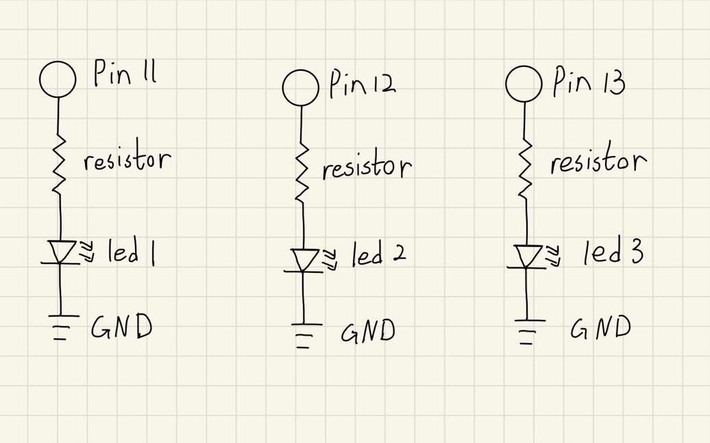
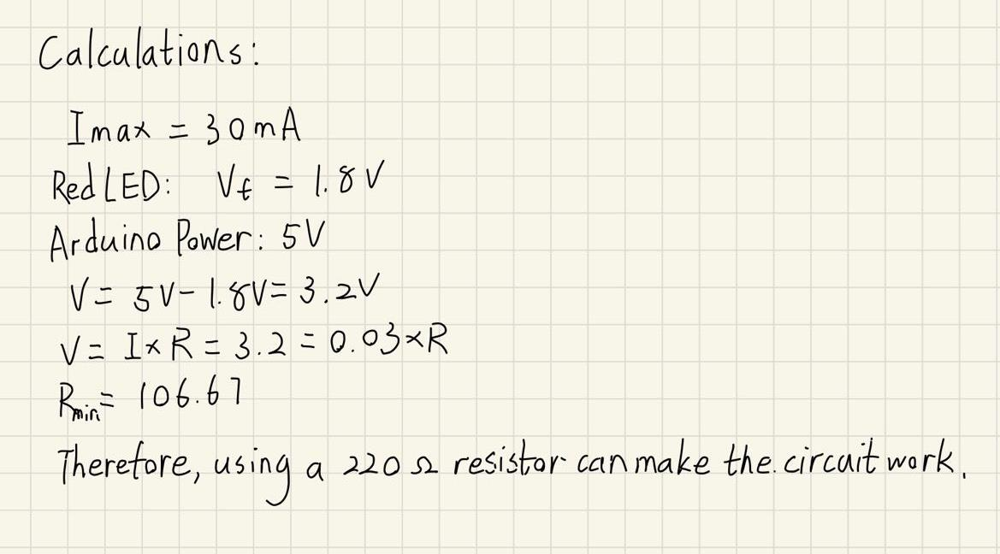
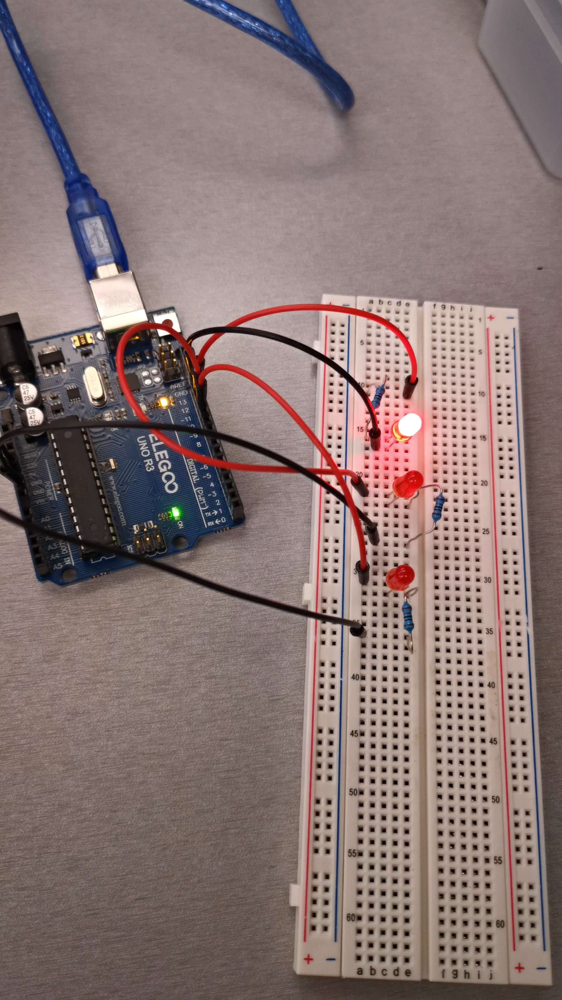
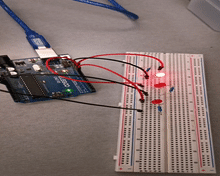

A schematic for 3 LEDs connected to the Arduino. The LEDs blink in a pattern.
Components in the circuit:
3 red LEDs
3 220ohm resisters
6 wires
Schematic:


Circuit:

The circuit was implemented on my breadboard. Input Wires are pluged into pin 11, 12, and 13. Output wires are all pluged into the ground.
Firmware:
// the setup function runs once when you press reset or power the board
void setup() {
// initialize digital pin 11 as an output.
pinMode(11, OUTPUT);
// initialize digital pin 12 as an output.
pinMode(12, OUTPUT);
// initialize digital pin 13 as an output.
pinMode(13, OUTPUT);
}
// the loop function runs over and over again forever
void loop() {
digitalWrite(11, HIGH); // turn the first LED on (HIGH is the voltage level)
delay(100); // wait for 1/10 of a second
digitalWrite(11, LOW); // turn the first LED off by making the voltage LOW
delay(100); // wait for 1/10 of a second
digitalWrite(12, HIGH); // turn the second LED on (HIGH is the voltage level)
delay(100); // wait for 1/10 of a second
digitalWrite(12, LOW); // turn the second LED off by making the voltage LOW
delay(100); // wait for 1/10 of a second
digitalWrite(13, HIGH); // turn the third LED on (HIGH is the voltage level)
delay(100); // wait for 1/10 of a second
digitalWrite(13, LOW); // turn the third LED off by making the voltage LOW
delay(100); // wait for 1/10 of a second
}
Circuit's Operation GIF:

Here is all the documentation for assignment 1!